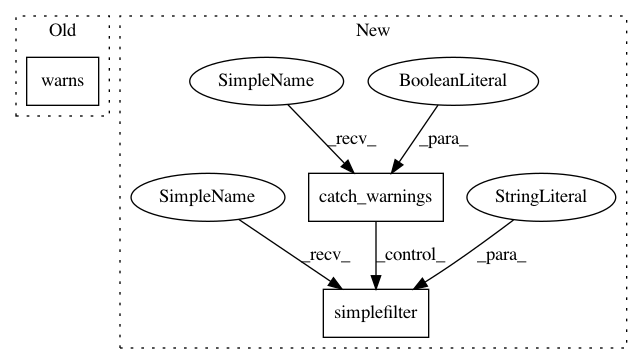

0d40a52eec5351b113cf861d03b3041ababb1727,test/torchaudio_unittest/functional/functional_cpu_test.py,TestCreateFBMatrix,test_warning,#TestCreateFBMatrix#,45
Before Change
assert len(w) == 0
def test_warning(self):
with pytest.warns(None) as w:
F.create_fb_matrix(201, 0, 8000, 128, 16000)
assert len(w) == 1
After Change
assert len(w) == 0
def test_warning(self):
with warnings.catch_warnings(record=True) as w:
warnings.simplefilter("always")
F.create_fb_matrix(201, 0, 8000, 128, 16000)
assert len(w) == 1
In pattern: SUPERPATTERN
Frequency: 3
Non-data size: 3
Instances
Project Name: pytorch/audio
Commit Name: 0d40a52eec5351b113cf861d03b3041ababb1727
Time: 2021-01-20
Author: nicolashug@fb.com
File Name: test/torchaudio_unittest/functional/functional_cpu_test.py
Class Name: TestCreateFBMatrix
Method Name: test_warning
Project Name: pytorch/audio
Commit Name: 0d40a52eec5351b113cf861d03b3041ababb1727
Time: 2021-01-20
Author: nicolashug@fb.com
File Name: test/torchaudio_unittest/functional/functional_cpu_test.py
Class Name: TestCreateFBMatrix
Method Name: test_no_warning_high_n_freq
Project Name: pytorch/audio
Commit Name: 0d40a52eec5351b113cf861d03b3041ababb1727
Time: 2021-01-20
Author: nicolashug@fb.com
File Name: test/torchaudio_unittest/functional/functional_cpu_test.py
Class Name: TestCreateFBMatrix
Method Name: test_no_warning_low_n_mels